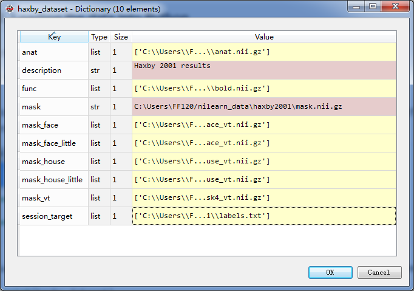
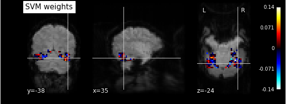

Python是一种解释型、面向对象、动态数据类型的高级程序设计语言。目前主流的算法基本上都有Python的实现版本，所以能够使用Python处理fMRI数据对于直接使用多种多样的机器学习算法是十分有帮助的。
本文主要涉及的内容有Python,Scikit-lean,nibabel,nilean等。
Python
安装Python环境，Windows下使用建议使用Anaconda,一个类似matlab界面的Python环境。
Anaconda
安装完成后，打开cmd键入spyder打开软件
scikit-learn
scikit-learn是一个很有名的机器学习库，设计了一系列的通用接口以使不同的机器学习算法符合相似的流程。里面实现了大部分目前流行的机器学习算法，而且文档良好，更新速度很快。
安装
卸载
更新
NiBabel
NiBabel是一个读写常见的神经影像数据的Python语言的程序包，可以实现读取和生成大部分常见的神经影像数据格式。
安装
测试是否成功安装
在Python控制台键入import nibabel没有报错信息证明安装成功
神经影像数据格式
使用fMRI得到的原始数据一般是.IMA结尾的数据，每个TR一个文件，我们可以使用mricron的dcm2niigui.exe转换成.nii结尾的4D文件格式
读取数据
1 | import nibabel as nib |
以上代码将image.nii文件读取到img中，img是nibabel.nifti1.Nifti1Image类型的。
一个nibabel.nifti1.Nifti1Image类型的数据包含三个主要的部分
- image data array 存放图像数据的矩阵
- an affine array 定义了图像数据在参考空间的位置
- image metadata 存放图像的一些属性信息，采集设备名称，体素的大小，扫描层数等等。
image data array 虽然存储了每个体素的取值信息，但是并没有存储位置信息。也就是说我们并不知道某个体素来自由大脑哪个具体的位置
affine数组定义了一个从image data array 到标准的参考空间的映射，每个体素经过这个数组映射后都会到一个标准的参考空间，在那个空间中，我们精确的知道每个体素所处的位置。
结构像和功能像扫描的区域和方向均有所差异，所以都需要使用affine数组映射到参考空间，以确定体素在真实大脑中的位置显示数据
1 | img_array = img.get_data() //get image data array |
Nilearn
Nilearn是一个Python实现的适用于处理Neuro-Image数据的机器学习工具包，它可以和scikit-learn很好的结合，用很少的代码就能将大部分机器学习方法用来处理神经影像数据。
实验和数据介绍
该工具包中大部分说明都是使用The Haxby 2001 experiment的实验数据，这里我们介绍一下该实验的相关信息和采集的数据的结构。
实验内容
实验一个选取了六个被试，每个被试的实验内容都有一样。每个被试在实验的时候观看一些图片，使用功能核磁共振获取被试此时大脑的激活信息，利用获得的信息看是否能够分类被试看到的图片的种类。
给被试看的图片分为八类
- 人脸
- 猫
- 房屋
- 椅子
- 剪刀
- 鞋
- 瓶子
- 毫无意义的照片（使用随机噪声生成的图片）
数据结构
- 数据的获取可以使用内建的方法
2
haxby_dataset = datasets.fetch_haxby()
haxby_dataset的结构是这样的

anat是被试1的结构像，T1像，是124X256X256的，是一个3D图像，是被试在静息态的扫描图像func是被试1的功能图像，就是被试在实验过程中做任务的时候扫描的图像，是40X64X64X1452的，是个4D的图像，前三维是一次TR扫描到的图像，是三维的，最后一维1452代表被试1的功能像一共扫描了1452个TR，也就是有1452个功能图像。mask是感兴趣的脑区的一个掩膜，想要留下的部分都是1，不需要的部分都是0，是一个和原来图像一样大的矩阵，这个mask是应用到功能像上的，所以它的大小是40X64X64session_target是一个文本文件，里面一共1452行，每一行代表一个TR，表示该TR进行的时候被试受到的刺激的类型。
使用内建方法获得的数据只有一个被试的数据，不过该数据集已经公开，完整数据可以去网站下载。
解码实验
使用fMRI测量得到的大脑状态信息(这里表现为一个40X64X64X1452的矩阵)，解码出被试所受刺激的种类(这里是图片的八种类别)。
基本思路是：从原始数据中用一定的策略提取有用的特征作为输入，session_target中的信息作为输出，训练一个分类器，尽可能的根据输入的特征得出正确的分类结果。
特征选择可以使用的方法：
- 选择感兴趣的脑区
- 使用统计方法，计算体素T值和F值，只选择那些有显著变化的体素
- 使用无监督的降维方法，例如PCA
分类器可以选择的方法：
- 线性的支持向量机
- LDA，ICA
- 决策树
- 神经网络
以下分成四个部分介绍分析的过程：
- 特征选择
- 数据准备
- 模型训练和测试
- 结果分析和可视化显示
特征选择
使用mask
这里我们选择使用mask的方法降低特征的数量。mask一般定位在某一个或几个脑区，感兴趣的脑区是根据以前的相关研究确定的，比如研究视觉刺激，就找大脑皮层处理视觉的相关区域。1
2
3
4
5
6
7
8
9
10
11
12from nilearn.input_data import NiftiMasker
#模版文件的路径
mask_vt_filename = haxby_dataset.mask_vt[0]
#加载模版并标准化
nifti_masker = NiftiMasker(mask_img=mask_vt_filename, standardize=True)
#功能像4D文件
func_filename = haxby_dataset.func[0]
#应用mask，并将数据合适转换成（n_sample,n_features）的形式
fmri_vt_masked = nifti_masker.fit_transform(func_filename)
>>>fmri_vt_masked
>>>(1452L, 577L)
功能像文件本来是
40*64*64*1452的，如果不做特征选择，直接转换成(n_samples,n_features)的形式,应该是1452*163840的规模，显然特征数量太大了。
应用完mask之后，现在fmri_masked是1452*577的，特征一下少了很多。
我们推测，mask文件中应该有577个1，其余的都是0，
2
3
4
5
mask_v4 = nib.load('mask4_vt.nii.gz')
mask_v4data = mask_v4.get_data()
import numpy as np
print np.sum(mask_v4data)
输出
577.0,所以经过mask之后的特征变成了577维。
使用F检验
这里我们使用数据提供的一个比较大的mask先选择一个比较大的感兴趣的区域hsxby2001\mask.nii.gz，然后使用F检验找出影响程度最大的前577个特征，与上面直接使用一个小的mask的分类结果做对比。1
2
3
4
5
6
7
8
9
10
11
12from nilearn.input_data import NiftiMasker
#模版文件的路径
mask_filename = haxby_dataset.mask
#加载模版并标准化
nifti_masker = NiftiMasker(mask_img=mask_filename, standardize=True)
#功能像4D文件
func_filename = haxby_dataset.func[0]
#应用mask，并将数据合适转换成（n_sample,n_features）的形式
fmri_masked = nifti_masker.fit_transform(func_filename)
>>>fmri_masked
>>>(1452L, 39912L)
1 | from sklearn.svm import SVC |
此处的
anova_svc相当于下面的svc,只不过anova_svc会首先执行特征选择过程，再把特征选择的结果送入SVM分类器，anova_svc和svc的使用在形式上完全一样，都是.fit(X,y),.predict(X)的形式。
数据准备
在这一步，我们要对数据的组织格式进行处理，使之符合scikit-learn的输入格式。
scikit-learn训练器的输入格式一般为train_data,target_data;train_data的格式为(n_samples,n_features)
1 | #实验包含八类，这里我们只选择其中的两类数据进行实验 |
现在我们准备好了数据，
train_data是216*577的，target_data是216*1的，正好能对应上。
模型训练和测试
实际的模型训练和测试中，常使用交叉验证的方式来保证可靠性。所谓的交叉验证，就是使用一部分数据训练模型，使用另外一部分测试准确率；然后反过来。每次训练数据和测试数据都是互斥的，没有交集。scikit-learn提供了接口，我们可以很方便的实现交叉验证。1
2
3
4
5
6
7
8
9
10
11
12
13
14
15
16
17
18
19
20
21
22
23
24
25
26
27
28
29
30
31
32
33
34
35
36
37
38
39
40
41
42
43
44
45
46
47
48
49
50
51
52
53
54
55
56
57
58
59
60
61
62
63
64#使用SVM分类和预测
from sklearn.svm import SVC
svc = SVC(kernel='linear')
from sklearn.cross_validation import KFold
cv = KFold(n=len(train_data), n_folds=5)
#使用mask
cv_scores = [] #存储每次测试的准确率
for train, test in cv:
svc.fit(train_data[train], target_data[train])
prediction = svc.predict(train_data[test])
cv_scores.append( np.sum(prediction == target_data[test]) / float(np.size(target_data[test])) )
classification_accuracy = np.mean(cv_scores) #计算平均的分类准确率
>>>cv_scores
>>>
[0.72727272727272729,
0.46511627906976744,
0.72093023255813948,
0.58139534883720934,
0.7441860465116279]
>>>classification_accuracy
>>>0.64778012684989428
#使用F检验
cv_f_scores = []
for train, test in cv:
anova_svc.fit(train_f_data[train], target_data[train])
y_pred = anova_svc.predict(train_f_data[test])
cv_f_scores.append(np.sum(y_pred == target_data[test]) / float(np.size(target_data[test])))
classification_f_accuracy = np.mean(cv_f_scores) #计算平均的分类准确率
>>>cv_f_scores
>>>Out[133]:
[0.59090909090909094,
0.39534883720930231,
0.76744186046511631,
0.65116279069767447,
0.55813953488372092]
>>>classification_f_accuracy
>>>0.59260042283298098
#计算change level
from sklearn.dummy import DummyClassifier
from sklearn.cross_validation import cross_val_score
null_cv_scores = cross_val_score(DummyClassifier(), train_data, target_data, cv=cv)
null_accuracy = np.mean(null_cv_scores)
>>>null_cv_scores
>>>array([ 0.54545455, 0.48837209, 0.48837209, 0.34883721, 0.55813953])
>>>null_accuracy
>>>0.48583509513742068
print cv_scores,classification_accuracy
print cv_f_scores,classification_f_accuracy
print null_cv_scores,null_accuracy
可以看到，简单的使用F检验的结果并没有使用先验的小mask获得的准确率高，但是F检验获得的分类准确率也显著高于chance level.
结果分析和可视化显示
获得模型参数1
2
3
4
5
6
7
8# Retrieve the SVC discriminating weights
coef_ = svc.coef_
# Reverse masking thanks to the Nifti Masker
coef_img = nifti_masker.inverse_transform(coef_)
# Save the coefficients as a Nifti image
coef_img.to_filename('haxby_svc_weights.nii')
svc.coef_是SVM模型的参数，从中可以看出各个特征对分类结果的贡献的大小。
显示图像1
2
3
4
5
6
7
8
9
10# Create the figure
from nilearn import image
from nilearn.plotting import plot_stat_map, show
import nibabel as nib
# Plot the mean image because we have no anatomic data
mean_img = image.mean_img(func_filename)
weight_img = nib.load('haxby_svc_weights.nii')
plot_stat_map(weight_img, mean_img, title='SVM weights')
show()

从该图像中，我们能够看到那些对分类结果影响较大的体素，这些地方很可能就是大脑内专门负责这两个不同的类别的区分任务的。